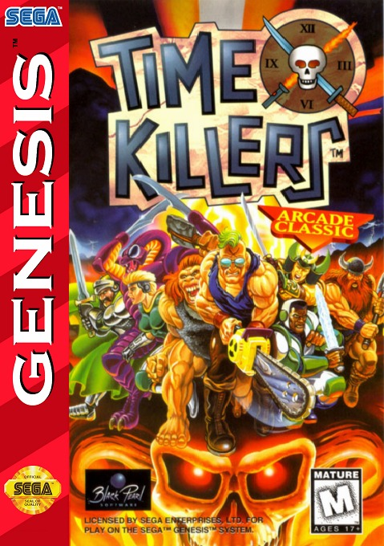
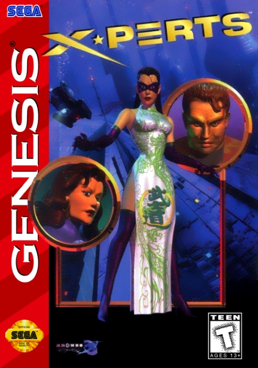
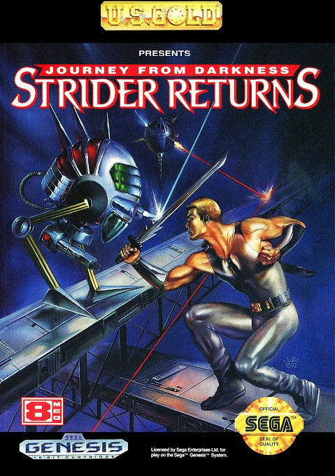
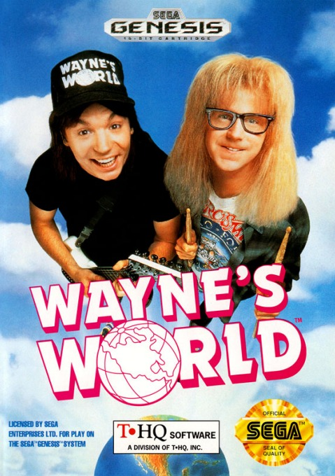
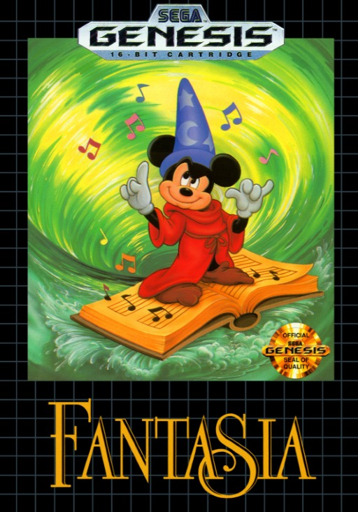
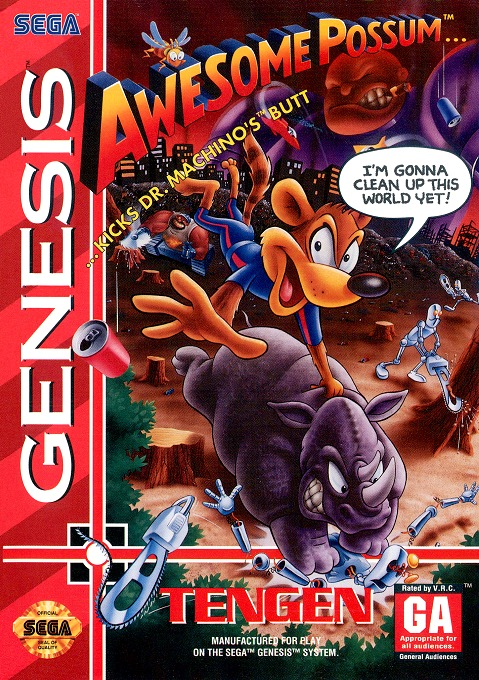
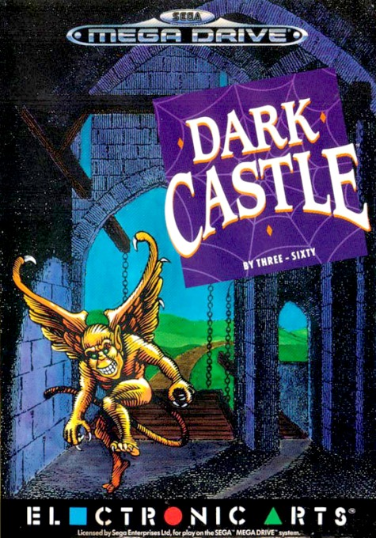
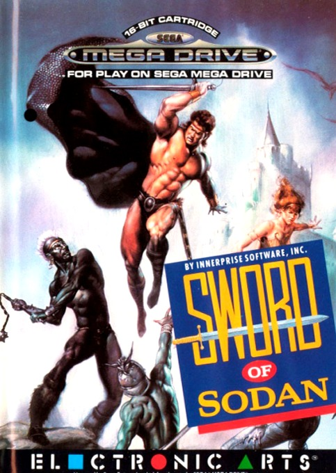
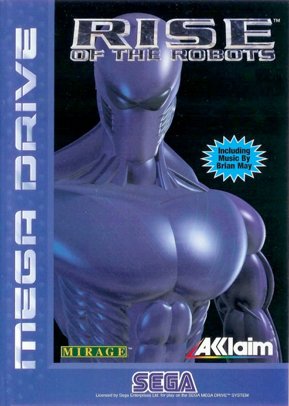

Contamos en cuantas listas de peores aparece cada juego (la revista Mega, Den of Geek, SVG, WatchMojo, TheGamer y mas), sumamos la leyenda de cada cartucho y dejamos afuera lo que ya esta en nuestro Top Mundial. Solo juegos con licencia Sega y venta normal.
03
#10
EN 1 LISTA

Mega Drive
TARROVISIONCH 10
NO SIGNAL
Inserta gameplay aqui
TIME KILLERS
MEGA DRIVE · 1996 · BLACK PEARL (PORT DE THQ) · DEN OF GEEK (#14)
▶ PREMIO AL QUE LLEGO DOS AÑOS TARDE A LA PELEASe anuncio para la primavera de 1994, se cancelo, se revivio y salio en julio de 1996, igual que la copia de prueba. Next Generation le puso 1 de 5 y dijo que era el peor ejemplo de pelea 2D de la historia.
04
#9
EN 2 LISTAS

Mega Drive
TARROVISIONCH 09
NO SIGNAL
Inserta gameplay aqui
X-PERTS
MEGA DRIVE · 1996 · SEGA (DEV. ABALONE) · DEN OF GEEK (#12) + SVG (#5)
▶ PREMIO AL EQUIPO DE ELITE QUE SE QUEDO PARADOUn ninja lidera un equipo para detener a terroristas con una bomba termonuclear, pero muchas misiones consisten en quedarte parado apretando botones. Segun Next Generation, con el arma en la mano no puedes saltar.
05
#8
EN 2 LISTAS

Mega Drive
TARROVISIONCH 08
NO SIGNAL
Inserta gameplay aqui
JOURNEY FROM DARKNESS: STRIDER RETURNS
MEGA DRIVE · 1992 · U.S. GOLD (DEV. TIERTEX) · DEN OF GEEK (#11) + THEGAMER
▶ PREMIO AL STRIDER DE LA OTRA FAMILIALa secuela de Strider que hizo otro estudio, con licencia de Capcom, para computadoras, y que llego al Genesis con otro nombre. Una critica dijo que era como ver a un ser querido revivido como un zombi sin mente.
▶ PREMIO AL GOLPE QUE SIGUE AUNQUE EL ENEMIGO YA SE FUEBatman y Robin pelean con captura de movimiento al estilo Mortal Kombat. Electronic Gaming Monthly dijo que pegarle a un enemigo es una secuencia retrasada que sigue mucho despues de que el enemigo ya esta muerto.
07
#6
EN 3 LISTAS

Mega Drive
TARROVISIONCH 06
NO SIGNAL
Inserta gameplay aqui
WAYNE'S WORLD
MEGA DRIVE · 1993 · THQ (DEV. GRAY MATTER) · DEN OF GEEK (#13) + THEGAMER + FLUX 1995 (#19)
▶ PREMIO AL SCHWING QUE NO LLEGAWayne ataca con una guitarra y junta cosas llamadas Schwing para eliminar a todos los enemigos de la pantalla. Sega-16 le puso 1 de 10 y la revista Flux lo ubico 19 entre los 25 peores juegos de todos los tiempos (1995).
08
#5
EN 3 LISTAS

Mega Drive
TARROVISIONCH 05
NO SIGNAL
Inserta gameplay aqui
FANTASIA
MEGA DRIVE · 1991 · SEGA (DEV. INFOGRAMES) · MEGA (#6) + DEN OF GEEK (#8) + WATCHMOJO (#15)
▶ PREMIO A LA MAGIA QUE SE DESTRUYO EN BODEGAMickey de aprendiz de hechicero juntando notas musicales por cuatro mundos: agua, tierra, aire y fuego. La revista Mega lo puso 6 entre los 10 peores del Mega Drive. Segun Wikipedia, la licencia se dio por error y se destruyeron unas 5.000 copias.
09
#4
EN 3 LISTAS

Mega Drive
TARROVISIONCH 04
NO SIGNAL
Inserta gameplay aqui
AWESOME POSSUM
MEGA DRIVE · 1993 · TENGEN · DEN OF GEEK (#5) + CBR + SVG (#3)
▶ PREMIO AL RECICLAJE CON MAS VOCES QUE JUEGOUna zarigueya ecologista pelea contra los robots contaminantes del doctor Machino, con 80 voces digitalizadas y un rinoceronte que sirve de catapulta. Una revista le puso 93% y otra, 25%.
10
#3
EN 3 LISTAS

Mega Drive
TARROVISIONCH 03
NO SIGNAL
Inserta gameplay aqui
DARK CASTLE
MEGA DRIVE · 1991 · ELECTRONIC ARTS (DEV. ARTECH) · DEN OF GEEK (#3) + SVG (#2) + WATCHMOJO (#7)
▶ PREMIO AL CASTILLO DE LOS CONTROLES DORMIDOSDuncan lanza piedras y bolas de fuego en un castillo donde los controles parecen dormidos. Den of Geek lo llama uno de los juegos mas desagradables que uno podria obligarse a jugar, y su sonido te vuelve loco.
11
#2
EN 3 LISTAS

Mega Drive
TARROVISIONCH 02
NO SIGNAL
Inserta gameplay aqui
SWORD OF SODAN
MEGA DRIVE · 1990 · ELECTRONIC ARTS · DEN OF GEEK (#1) + SVG (#1) + WATCHMOJO (#10)
▶ PREMIO AL PORT QUE PERDIO TRES NIVELES EN EL VIAJEEn el Amiga fue un exito de critica (9/10). En el Genesis perdio 3 de sus 11 niveles y, segun SVG, quedo 'terminantemente aburrido y sin respuesta', peor incluso que Altered Beast. SVG lo puso primero entre los peores del Genesis.
12
#1
EN 4 LISTAS

Mega Drive
TARROVISIONCH 01
NO SIGNAL
Inserta gameplay aqui
RISE OF THE ROBOTS
MEGA DRIVE · 1995 · ACCLAIM (DEV. DATA DESIGN) · GAMESRADAR + DEN OF GEEK (#4) + SVG (#4) + WATCHMOJO (#2)
▶ PREMIO AL PLAN DE FRANQUICIA DE UN SOLO JUEGOIba a ser el comienzo de una franquicia con novela, juguetes, comics, serie animada y pelicula, con musica de Brian May en la caja. Salio un juego de pelea con un solo personaje controlable y pocos movimientos. Sega Power le puso 3%.
13
ANALISIS DEL TOP
LOS PORTS QUE PERDIERON COSAS EN EL VIAJE
Cinco de los diez son ports de juegos de computador o de arcade (Sword of Sodan, Dark Castle, Strider Returns, Time Killers y Rise of the Robots), tres venden una licencia (Fantasia, Wayne's World y Batman Forever) y cuatro salieron en 1995-96, con la nueva generacion encima. Acclaim abre y cierra el top, y EA aparece dos veces seguidas.
14
GAME OVER
INSERTA MONEDA PARA CONTINUAR
Coco cierra tocando el tema de Game Over en bateria. ¿Cual fue el peor cartucho de Mega Drive que les toco jugar? Cuentanos en los comentarios y cual consola quieren que siga.